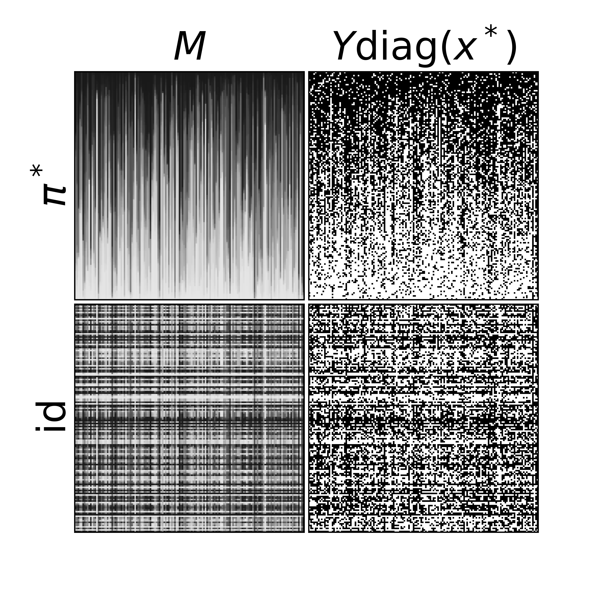

Main Question
Given \(n\) workers and \(d\) binary tasks
A proportion \(\lambda\) of observations
How can we accurately recover the labels?
An Optimal and Polynomial Time Method
Given \(n\) workers and \(d\) binary tasks
A proportion \(\lambda\) of observations
How can we accurately recover the labels?
\[ Y=\left(\begin{array}{ccccccccc} \color{green}{-1} & \color{blue}{+1} & \color{green}{-1} & \color{blue}{+1} & \color{blue}{+1} & \color{green}{-1} & \color{green}{-1} & \color{blue}{+1} & \color{blue}{+1} \\ \color{blue}{+1} & \color{blue}{+1} & \color{blue}{+1} & \color{blue}{+1} & \color{green}{-1} & \color{blue}{+1} & \color{blue}{+1} & \color{green}{-1} & \color{blue}{+1} \\ \color{blue}{+1} & \color{green}{-1} & \color{green}{-1} & \color{blue}{+1} & \color{green}{-1} & \color{blue}{+1} & \color{green}{-1} & \color{blue}{+1} & \color{blue}{+1} \\ \color{green}{-1} & \color{blue}{+1} & \color{blue}{+1} & \color{blue}{+1} & \color{green}{-1} & \color{blue}{+1} & \color{blue}{+1} & \color{blue}{+1} & \color{blue}{+1} \end{array}\right) \]
\[ Y=\left(\begin{array}{ccccccccc} \color{red}{0} & \color{blue}{+1} & \color{green}{-1} & \color{blue}{+1} & \color{red}{0} & \color{green}{-1} & \color{green}{-1} & \color{blue}{+1} & \color{blue}{+1} \\ \color{red}{0} & \color{blue}{+1} & \color{red}{0} & \color{blue}{+1} & \color{green}{-1} & \color{red}{0} & \color{blue}{+1} & \color{green}{-1} & \color{blue}{+1} \\ \color{blue}{+1} & \color{green}{-1} & \color{green}{-1} & \color{blue}{+1} & \color{green}{-1} & \color{blue}{+1} & \color{red}{0} & \color{blue}{+1} & \color{blue}{+1} \\ \color{green}{-1} & \color{blue}{+1} & \color{blue}{+1} & \color{red}{0} & \color{green}{-1} & \color{blue}{+1} & \color{red}{0} & \color{red}{0} & \color{red}{0} \end{array}\right) \]
Given workers \(i\in\{1, \dots, n\}\) and tasks \(k\in\{1, \dots, d\}\)
We observe
\[ Y_{ik} = B_{ik}(M_{ik}x_k^* + E_{ik}) \enspace \]
Where:
We observe
\[Y = B\odot(M\mathrm{diag}(x^*) + E) \in \mathbb R^{n \times d}\]
where \(\odot\) is the Hadamard product.
\[Y = B\odot(M\mathrm{diag}(x^*) + E) \in \mathbb R^{n \times d}\]
Bernoulli submodel (Shah et al., 2020)
\[ \begin{aligned}\label{eq:bernoulli_model} Y_{ik} = \begin{cases} x^*_k \text{ with proba } \lambda\left(\frac{1+M_{ik}}{2}\right) \\ -x^*_k \text{ with proba } \lambda\left(\frac{1-M_{ik}}{2}\right)\\ 0 \text{ with proba } 1-\lambda \end{cases} \end{aligned} \]
\(\frac{1+M_{ik}}{2}\) is the proba that \(i\) answers correctly to task \(k\).
\(\lambda\) is the probability of observing worker/task pair \((i,k)\)
\[ M_{\pi^*}=\left(\begin{array}{ccccccccc} \color{#000099}{0.9} & \color{#000099}{0.8} & \color{#000099}{0.9} & \color{#000099}{1\phantom{.0}} \\ \color{#4B0082}{0.8} & \color{#4B0082}{0.7} & \color{#4B0082}{0.9} & \color{#4B0082}{0.8} \\ \color{#990066}{0.6} & \color{#990066}{0.7} & \color{#990066}{0.7} & \color{#990066}{0.6} \\ \color{#CC0000}{0.5} & \color{#CC0000}{0.7} & \color{#CC0000}{0.5} & \color{#CC0000}{0.6} \end{array}\right) \]
\[ M_{\phantom{{\pi^*}}}=\left(\begin{array}{ccccccccc} \color{#990066}{0.6} & \color{#990066}{0.7} & \color{#990066}{0.7} & \color{#990066}{0.6} \\ \color{#CC0000}{0.5} & \color{#CC0000}{0.7} & \color{#CC0000}{0.5} & \color{#CC0000}{0.6} \\ \color{#000099}{0.9} & \color{#000099}{0.8} & \color{#000099}{0.9} & \color{#000099}{1\phantom{.0}} \\ \color{#4B0082}{0.8} & \color{#4B0082}{0.7} & \color{#4B0082}{0.9} & \color{#4B0082}{0.8} \end{array}\right) \]


Setting
\[ Y = B\odot(M \mathrm{diag}(x^*) + E)\] Shape constraint: \(\exists \pi^*\) s.t. \(M_{\pi^*} \in [0,1]^{n \times d}\) is isotonic
Recovering the labels
Ranking the workers
Estimating their abilities
\(\phantom{\color{purple}{\mathbb E}}\|M \mathrm{diag}(x^* \neq \hat x)\|_F^2\)
\(\phantom{\color{purple}{\mathbb E}}\|M_{\pi^*} - M_{\hat \pi}\|_F^2\)
\(\phantom{\color{purple}{\mathbb E}}\|M - \hat M\|_F^2\)
These three objectives are closely intertwined!
Setting
\[ Y = B\odot(M \mathrm{diag}(x^*) + E)\] Shape constraint: \(\exists \pi^*\) s.t. \(M_{\pi^*} \in [0,1]^{n \times d}\) is isotonic
Recovering the labels
Ranking the workers
Estimating their abilities
\(\color{purple}{\mathbb E}[\|M \mathrm{diag}(x^* \neq \hat x)\|_F^2]\)
\(\color{purple}{\mathbb E}[\|M_{\pi^*} - M_{\hat \pi}\|_F^2]\)
\(\color{purple}{\mathbb E}[\|M - \hat M\|_F^2]\)
These three objectives are closely intertwined!
Hamming Loss: \[ \sum_{k=1}^d \mathbf 1\{\hat x_k \neq x_k^*\}\]
Square Norm Loss: \[ \|M \mathrm{diag}(x^* \neq \hat x)\|_F^2\]
These parametric models often fail to fit data well
Recovering the labels
Ranking the workers
Estimating their abilities
\(\color{purple}{\mathbb E}[\|M \mathrm{diag}(x^* \neq \hat x)\|_F^2]\)
\(\color{purple}{\mathbb E}[\|M_{\pi^*} - M_{\hat \pi}\|_F^2]\)
\(\color{purple}{\mathbb E}[\|M - \hat M\|_F^2]\)
Max risk for recovering labels
\[\max_{M,\pi^*, x^*}{\mathbb E}[\|M \mathrm{diag}(x^* \neq \hat x)\|_F^2]\]
MiniMax risk for recovering labels
\[\mathcal R^*_{\mathrm{reco}}(n,d,\lambda)=\min_{\hat x}\max_{M,\pi^*, x^*}{\mathbb E}[\|M \mathrm{diag}(x^* \neq \hat x)\|_F^2]\]
Recovering labels
\[\mathcal R^*_{\mathrm{reco}}(n,d,\lambda)=\min_{\hat x}\max_{M,\pi^*, x^*}{\mathbb E}[\|M \mathrm{diag}(x^* \neq \hat x)\|_F^2]\]
Ranking workers
\[\mathcal R^*_{\mathrm{rk}}(n,d,\lambda)=\min_{\hat \pi}\max_{M,\pi^*, x^*}{\mathbb E}[\|M_{\pi^*} - M_{\hat \pi}\|_F^2]\]
Estimating abilities
\[\mathcal R^*_{\mathrm{est}}(n,d,\lambda)=\min_{\hat M}\max_{M,\pi^*, x^*}{\mathbb E}[\|M- \hat M\|_F^2]\]
(Shah et al., 2020): recovering \(x^*\) optimally using a least square method, conjectured NP hard (\(x^*\) unknown, \(M_{\pi^*\eta^*}\) bi-isotonic).
(Mao et al., 2020): estimating abilities \(M\) of workers optimally with least square method (\(x^*\) known, \(M_{\pi^*\eta^*}\) bi-isotonic)
(Liu & Moitra, 2020): ranking \(\pi^*\) and estimating abilities \(M\): improve state of the art poly. time (\(x^*\) known, \(M_{\pi^*\eta^*}\) bi-isotonic)
(Pilliat et al., 2024): ranking \(\pi^*\) and estimating abilities \(M\): achieves rates of Liu & Moitra (2020) without bi-isotonic assumption (\(x^*\) known, \(M_{\pi^*}\) isotonic)
This paper: recovering \(x^*\), ranking \(\pi^*\) and estimating abilities \(M\) in poly. time when \(n=d\) (\(x^*\) unknown, \(M_{\pi^*}\) isotonic)
Optimal poly. time method
If \(\tfrac{1}{\lambda} \leq n \leq d\), there exists a poly. time method \(\hat x\) achieving \(\mathcal R^*_{\mathrm{reco}}\) up to polylog factors, i.e. \[ \mathcal R_{\mathrm{reco}}(n,d,\lambda, \hat x) \lesssim \mathcal R^*_{\mathrm{reco}}(n,d,\lambda) \]
Minimax Risk
If \(\tfrac{1}{\lambda} \leq n \leq d\), up to polylogs, \[ \mathcal R^*_{\mathrm{reco}}(n,d,\lambda) \asymp \frac{d}{\lambda} \]
\[ \hat x^{(maj)}_k = \mathrm{sign} \left( \sum_{i=1}^n Y_{ik} \right) \enspace .\]
Max risk of majority vote
\[\mathcal R^*_{\mathrm{reco}}(n, d, \lambda, \hat x^{(maj)}) \asymp \tfrac{d \sqrt{n}}{\lambda}\]
Worst case (\(\lambda=1\)): \(M \asymp \frac{1}{\sqrt{n}}(\mathbf 1_{n\times d})\)
In this case, \(\hat x^{(maj)}\) is no better than random labelling and \(\|M\mathrm{diag}(\hat x \neq x^*)\|_F^2 \asymp d\sqrt{n}\)
Minimize
\[\|Y- \lambda M' \mathrm{diag}(x)\|_F^2\]
The set of isotonic matrices is convex…
But not isotonic matrices up to a permutation \(\pi^*\)
It is minimax optimal (Shah et al., 2020)
Idea: Population term \((M\mathrm{diag}(x^*))(M\mathrm{diag}(x^*))^T\) is independent of \(x^*\)
PCA Step:
\[\hat v = \underset{\|v\|=1}{\mathrm{argmax}}\|v^T Y\|^2\]
(Shah et al., 2020) sort \(|\hat v|\) to get a partial ranking
Aggregation: Majority vote on \(k\) top experts according to \(|\hat v|\)
Theorem 1 (Shah et al., 2020)
In submodel where \(\mathrm{rk}(M)= 1\), \(\hat x^{(\mathrm{Obi-Wan})}\) achieves minimax risk up to polylogs: \[\mathcal R(n,d, \lambda, \hat x^{(\mathrm{Obi-Wan})}) \lesssim \frac{d}{\lambda} \quad \textbf{(minimax)}\]
Theorem 2 (Shah et al., 2020)
In the model where \(M_{\pi^*\eta^*}\) is bi-isotonic up to polylogs: \[\mathcal R(n,d, \lambda, \hat x^{(\mathrm{Obi-Wan})}) \lesssim \frac{\sqrt{n}d}{\lambda} \quad \textbf{(not minimax)}\]
Let \(T \geq 1\). We generate \(T\) samples \((Y^{(1)}, \dots, Y^{(T)})\) from \(Y\).
Put \(Y_{ik}\) uniformly at random into one of the \(Y^{(s)}\).
\[\hat v = \underset{\|v\|=1}{\mathrm{argmax}}\|v^T Y^{(1)}\|^2 \quad \text{and} \quad \tilde v = \hat v \land \sqrt{\lambda / T}\]
Main idea: if \(M\) is isotonic, then up to a polylog
\[\|MM^T\|_{\mathrm{op}} \gtrsim \|M\|_F^2\]
Idea for the proof: if \(\|M\|_F^2 \gg \frac{d}{\lambda}\), then \(\|\tilde v^T M\| \gtrsim \|M\|_F^2\)
Define the weighted vote vector
\[\hat w = \tilde v^T Y^{(2)}\]
Define the estimated label as
\[\hat x_k^{(1)} = \mathrm{sign}(\hat w_k)\mathbf{1}\bigg\{|\hat w_k| \gg \sqrt{\sum_{i=1}^n \tilde v_i B_{ik}^{(2)}}\bigg\}\]
Repeat PCA Step + Voting Step on \(Y \mathrm{diag}(\hat x \neq 0)\) a polylogarithmic number of times.
We get \(\hat x^{(1)}, \hat x^{(2)}, \dots, \hat x^{(T)}\)
Output \(\hat x^{(T)}\)
\(\newcommand{\and}{\quad \mathrm{and} \quad}\)
Let \(M(t) = M\mathrm{diag}(x^{(t-1)} = 0)\)
While \(M(t) \gg d/\lambda\), we prove that
\[\|\tilde v^TM(t)\|_2^2 \gtrsim \|M\|_F^2 \and \|\tilde v^TM(t+1)\|_2^2 \lesssim d/\lambda\]
By Pythagoeran Theorem, we have
\[\|M(t)\|_F^2 - \|M(t+1)\|_F^2 \geq \|\tilde v M(t)\|_2^2 - \|\tilde v^TM(t+1)\|_2^2\]
This leads to exponential decay of \(\|M(t)\|_F^2\) until \(M(t) \leq d/\lambda\)
Black: \(M_{ik}=0\)
Blue: \(M_{ik} = h\)